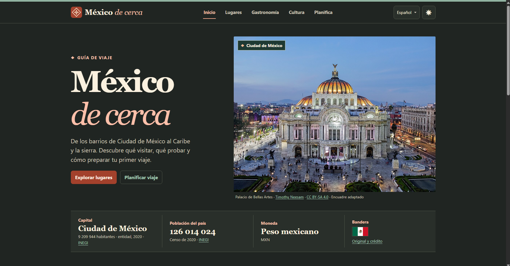
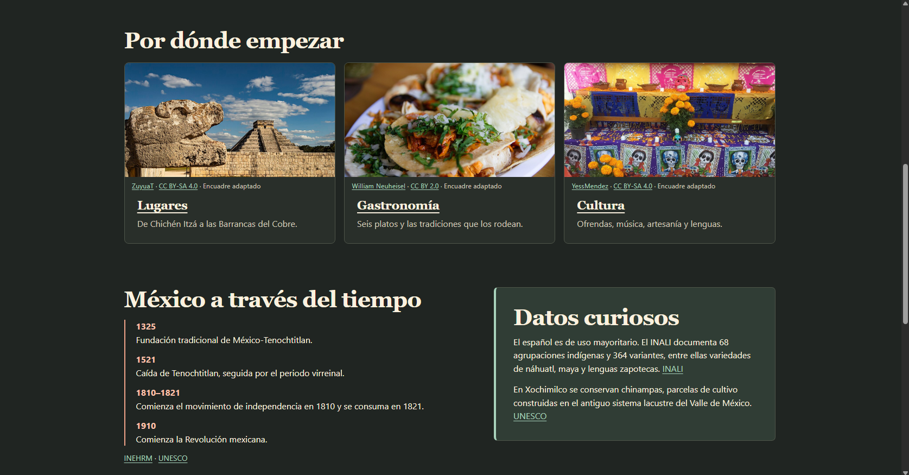
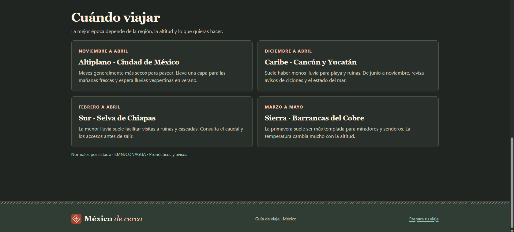
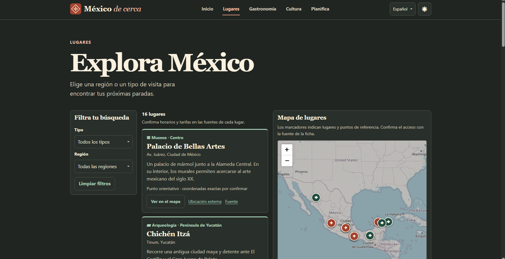
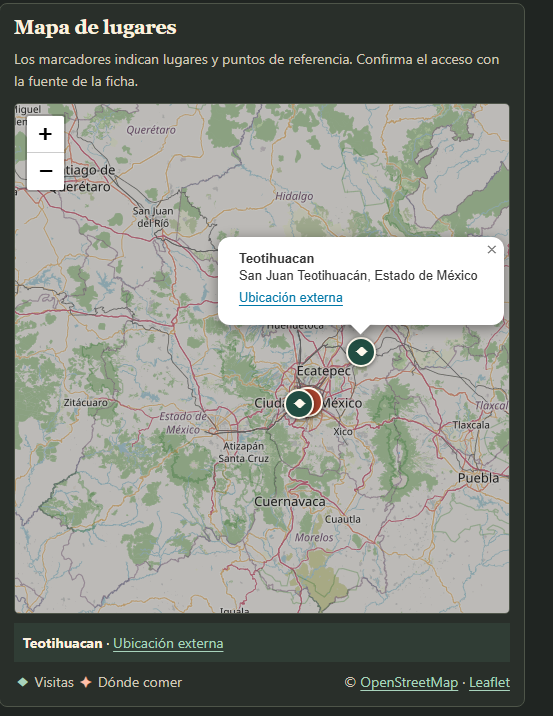
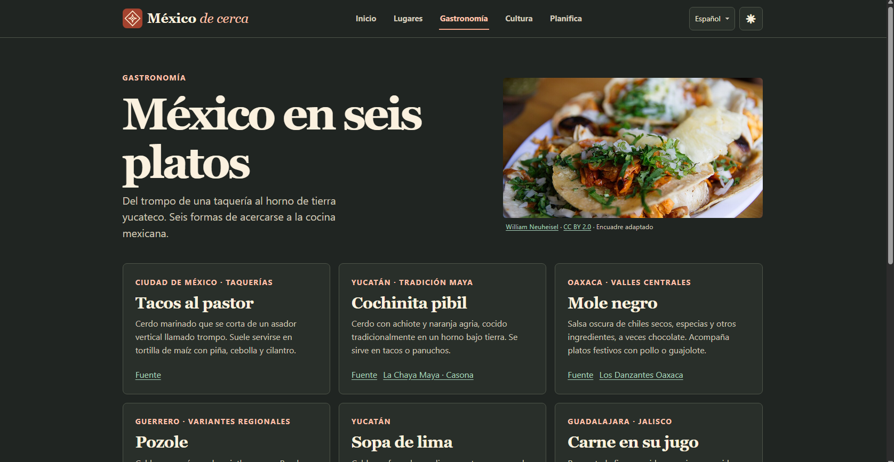
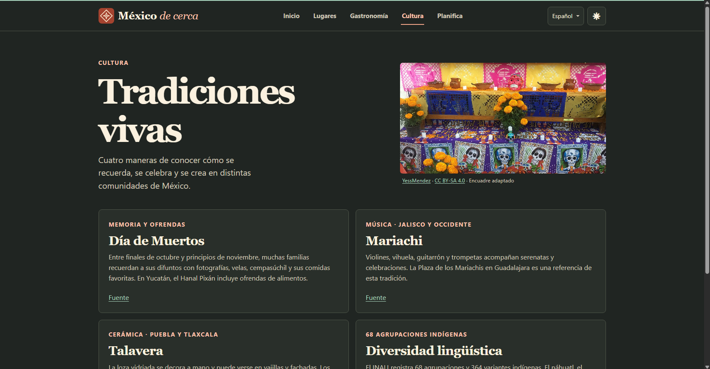
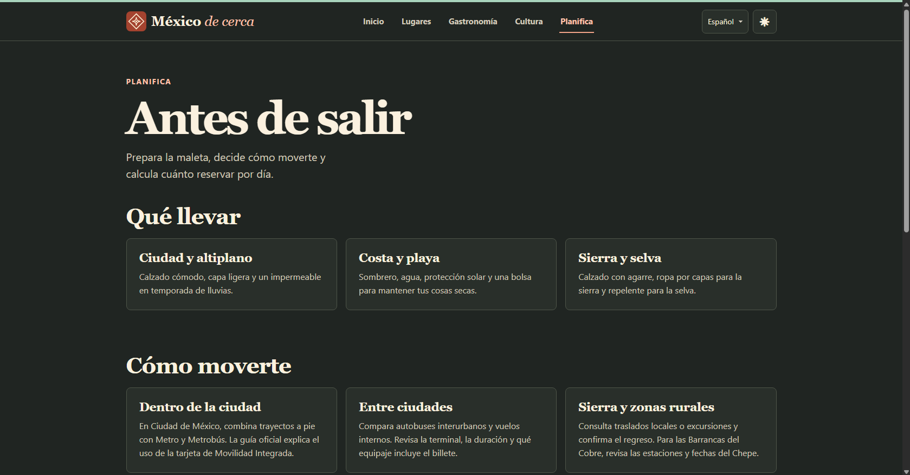
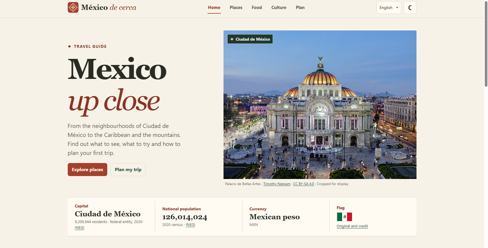

Fase 2 de 3
Primera versión
Con la propuesta de cinco páginas, confirmé que la guía sería para turistas en general y pedí que pudiera leerse en español e inglés.
Ir a las capturas del resultadoCerrar el alcance y encargar la web
Yo · Consulta a ChatGPT
Yo: yo diria que tengo libertad de hacerlo, si no es ninguna complejidad hacerlo lo puedo hacer como lo has dihco si. quiero una guía general para turistas, me gustaria que hubiera version en español y en ingles. y otra cosa, ahora con estos datos y me des el prompt para codex. que modelo me recomiendas usar?
ChatGPT (GPT Sol 6.2) · Resumen
Recomendó GPT‑6.2 Sol con razonamiento Medio y velocidad Estándar para la primera versión. Preparó un encargo para construir y probar en local la guía bilingüe, con HTML, CSS y JavaScript, Leaflet, dos temas y rutas relativas para GitHub Pages.
ChatGPT · Prompt para CodexLeer el encargo original
Construye en la carpeta local abierta una primera versión funcional de una guía de viajes sobre México, el país. Es una práctica de Desarrollo de Interfaces de 2.º de DAM. Empieza revisando la carpeta y después implementa y prueba la aplicación. Quedan 15 horas para la entrega completa, así que prioriza una versión funcional y publicable. ENUNCIADO Y OBJETIVO El profesor pide una aplicación que muestre información sobre un lugar, como «mi pueblo», «mi barrio», «mi instituto» o «mi país». Debe funcionar como una guía de viaje, con contenido como sitios turísticos y restaurantes, e incluir cambio entre modo claro y oscuro. La práctica evalúa maquetación, varias pantallas, tarjetas y transiciones. La interfaz debe cambiar de distribución y comportamiento según el ancho y poder usarse con teclado y pantalla táctil. La guía va dirigida a turistas en general que quieren conocer México y preparar un primer viaje. Usa HTML, CSS y JavaScript, con Leaflet para el mapa. Organiza el código de forma que pueda explicar y modificar la aplicación en clase. Usa un sitio estático con rutas relativas que funcionen al publicarlo en GitHub Pages bajo el nombre del repositorio. PÁGINAS Y CONTENIDO 1. Inicio. Portada con una fotografía real, presentación del país, una línea del tiempo breve, datos curiosos, capital y población indicando año y ámbito geográfico, lenguas, moneda y bandera. Resume el clima y las mejores épocas para visitar distintas zonas según el destino y la actividad. 2. Lugares. Selecciona unos 12 lugares turísticos y 4 sitios para comer, repartidos entre varias regiones. Incluye ciudades, playas, montañas o naturaleza, museos y monumentos o zonas arqueológicas. Usa tarjetas con filtros por tipo y región, recuento de resultados y opción para limpiar filtros. Las tarjetas y el mapa deben compartir la misma fuente de datos. Al pulsar «Ver en el mapa», centra y muestra el marcador correspondiente. Distingue los sitios para comer mediante icono o texto además del color. Si el mapa no carga, conserva las fichas y enlaces de ubicación utilizables. 3. Gastronomía. Presenta seis platos con una breve explicación y su región o tradición cuando se pueda documentar. Enlaza con los sitios para comer de la guía. 4. Cultura. Presenta cuatro temas con ejemplos concretos, como Día de Muertos, música, artesanía y diversidad lingüística. 5. Planifica. Incluye qué llevar según el destino, opciones de transporte y un presupuesto orientativo en MXN por persona y día. Propón dos niveles de gasto, económico y medio, desglosados en alojamiento, comida, transporte local y entradas. Identifica la ciudad o zona de referencia, fecha y fuentes. Si faltan datos fiables, indica qué falta por confirmar. IDIOMAS Y DISEÑO El español es el idioma inicial. Añade un selector visible «Español / English» en las cinco páginas. Traduce toda la experiencia creada por la guía, incluidos la navegación, textos, filtros, fichas, mensajes, etiquetas accesibles y pies de foto cuando proceda. Mantén los nombres propios y la moneda MXN. Actualiza el atributo lang del documento. Conserva el idioma y el modo claro u oscuro al navegar y recargar. Cambiar de idioma en Lugares debe conservar los filtros aplicados. El estilo debe recordar a una revista de viajes sobre México, con fotografía protagonista, fondo crema, terracota, verde agave y detalles discretos inspirados en la talavera. En modo oscuro usa fondo carbón y acentos con buen contraste. Usa transiciones breves y respeta la preferencia de movimiento reducido. A unos 1280 px, muestra la navegación completa, filtros laterales y lista junto al mapa. A unos 768 px, usa tarjetas en dos columnas, filtros plegables sobre los resultados y mapa debajo. En móvil, usa menú compacto, botón «Filtrar», tarjetas a una columna y selector «Lista / Mapa». «Ver en el mapa» debe abrir la vista del mapa en móvil y mostrar el lugar elegido. Conserva los filtros al redimensionar y asegúrate de que el mapa se reajusta al hacerse visible. FUENTES E IMÁGENES Verifica nombres, ubicaciones, horarios y tarifas cuando los publiques. Parte de estas fuentes: - INEGI para la población de Ciudad de México: https://cuentame.inegi.org.mx/monografias/informacion/df/poblacion/ - INALI para la diversidad lingüística: https://www.inali.gob.mx/sitios/clin-inali/ - SMN/CONAGUA para datos climáticos por destino: https://smn.conagua.gob.mx/ - INAH para zonas arqueológicas: https://www.inah.gob.mx/zonas-arqueologicas - Webs oficiales de recintos, destinos y restaurantes para las fichas. Usa fotografías propias si están en la carpeta o imágenes con licencia de publicación comprobada, por ejemplo de Wikimedia Commons. Conserva autor, licencia y enlace al original. Muestra la atribución del mapa. Si no puedes verificar un horario, un precio, una coordenada o una licencia, deja constancia del dato pendiente y evita publicarlo como confirmado. PRUEBAS Y ENTREGA LOCAL - Recorre las cinco páginas en castellano e inglés y en ambos temas. Comprueba que idioma y tema persisten al cambiar de página y al recargar. - Prueba a 1280, 768, 390 y 320 px. Aplica un filtro y redimensiona de escritorio a móvil: el filtro debe conservarse. Comprueba que la página no tiene desplazamiento horizontal. - Comprueba el menú y los filtros con teclado, foco visible y retorno del foco al cerrar. Prueba también el selector «Lista / Mapa» con interacción táctil o emulada. - Comprueba que los filtros afectan tanto a las tarjetas como a los marcadores, que se puede volver a todos los resultados y que existe un mensaje cuando no hay coincidencias. Prueba «Ver en el mapa» y que la lista funciona si falla la capa cartográfica. - Comprueba enlaces y recursos con un servidor local y verifica las rutas para publicar el sitio dentro de un repositorio de GitHub Pages. Indica claramente qué pruebas has ejecutado y cuáles quedan para revisión manual. Deja un README breve en español con el comando exacto para ejecutar la web en local, cómo publicarla en GitHub Pages, cómo se organiza el código y dónde se editan el contenido, las traducciones y las fuentes. Al terminar, resume los cambios, los resultados de las pruebas y los pendientes sin reproducir los archivos enteros en el chat. Esta fase termina con la web funcional en la carpeta local. La publicación, el PDF final y la web del proceso se harán por separado. La ruta de tres días queda como mejora opcional después de validar la primera versión.
Resultado de Codex
El Word recoge el resultado mediante capturas. Se ven las cinco páginas, el mapa con el marcador de Teotihuacán abierto y dos configuraciones de Inicio, en español y modo oscuro y en inglés y modo claro.
Capturas del resultado

















